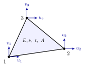
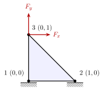
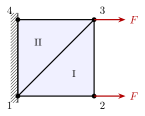
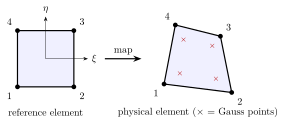

Lecture 4
Plane Elasticity, Triangle and Quad Elements
Now the payoff lecture. We want to compute a genuinely two-dimensional solid: a thin sheet of material, loaded in its plane — a bracket, a plate with a hole, a dam cross-section. No arrangement of springs will get us there, and drawing-based intuition is out of its depth. But the Lecture 2 program was built for exactly this trip: we repeat its steps, one by one, on the new physics, and they will hand us a working element.
4.1 The same three steps, in the plane
The actors, now on a two-dimensional stage \(\Omega\) (a region of the \(x\)-\(y\) plane, representing a sheet of constant thickness \(t\)): displacements, strains, stresses, loads — each simply grew more components. (In 1D we told the three statements balance-first; the order is free, and this time we follow the chain \(u \to \boldsymbol{\varepsilon}\to \boldsymbol{\sigma }\to\) balance, since each quantity sets the stage for the next.)
(i) Kinematics.
The displacement is a vector field: every point moves by \(u(x,y)\) in \(x\) and \(v(x,y)\) in \(y\). Strain now has three components: stretching in \(x\), stretching in \(y\), and the change of the right angle between the \(x\) and \(y\) directions (shear): \[\varepsilon_x = \frac{\partial u}{\partial x}, \qquad \varepsilon_y = \frac{\partial v}{\partial y}, \qquad \gamma_{xy} = \frac{\partial u}{\partial y} + \frac{\partial v}{\partial x}. \tag{4.1}\] Each is the 2D cousin of \(\varepsilon= \mathrm{d}u/\mathrm{d}x\): pure geometry, obtained by watching how neighboring points displace relative to each other. We collect them in a vector \(\boldsymbol{\varepsilon}= [\varepsilon_x,\ \varepsilon_y,\ \gamma_{xy}]^{\mathsf{T}}\) — bookkeeping, nothing more.
(ii) Material law.
Stress likewise has three components \(\boldsymbol{\sigma }= [\sigma_x,\ \sigma_y,\ \tau_{xy}]^{\mathsf{T}}\), and Hooke’s law becomes a small matrix. For a thin sheet free to contract in thickness (plane stress — the standard assumption for sheet-like parts): \[\boldsymbol{\sigma }= \mathbf{D}\,\boldsymbol{\varepsilon}, \qquad \mathbf{D} = \frac{E}{1-\nu^2} \begin{bmatrix} 1 & \nu & 0\\ \nu & 1 & 0\\ 0 & 0 & \frac{1-\nu}{2}\end{bmatrix}, \tag{4.2}\] with Young’s modulus \(E\) and Poisson’s ratio \(\nu\) (sideways contraction; steel \(\approx0.3\)). \(\mathbf{D}\) is the 2D replacement for the scalar \(E\) — symmetric, as a material stiffness must be. Its third diagonal entry, \(\frac{E}{1-\nu^2}\cdot\frac{1-\nu}{2} = \frac{E}{2(1+\nu)} = G\), is the shear modulus: \(\tau_{xy} = G\,\gamma_{xy}\). With \(\nu=0\) the off-diagonal entries vanish and \(x\) and \(y\) decouple. (The sibling assumption plane strain, for long prismatic bodies like dams, only changes the entries of \(\mathbf{D}\), to \(\frac{E}{(1+\nu)(1-2\nu)}\bigl[\begin{smallmatrix}1-\nu&\nu&0\\ \nu&1-\nu&0\\ 0&0&(1-2\nu)/2\end{smallmatrix}\bigr]\); nothing downstream is affected.)
(iii) Equilibrium.
Balancing forces on a small rectangle \(\mathrm{d}x\times \mathrm{d}y\) (the 2D version of Fig. 2.1, with stresses acting on all four edges and a body force \(\mathbf{b} = [b_x, b_y]^{\mathsf{T}}\) per unit volume, e.g. self-weight \(\rho g\)) gives one equation per direction: \[\frac{\partial \sigma_x}{\partial x} + \frac{\partial \tau_{xy}}{\partial y} + b_x = 0, \qquad \frac{\partial \tau_{xy}}{\partial x} + \frac{\partial \sigma_y}{\partial y} + b_y = 0 \qquad\text{in } \Omega. \tag{4.3}\]
Chaining (i)\(\to\)(ii)\(\to\)(iii) produces a system of partial differential equations in \(u\) and \(v\) — the 2D strong form. The boundary conditions follow the same conjugate-pair logic as always, now along the boundary curve \(\Gamma\): on each part of \(\Gamma\), per direction, either the displacement is prescribed (essential) or the surface traction — force per edge area — is prescribed (natural), with free edges being the homogeneous natural case \(\bar{\mathbf{t}}=\mathbf{0}\).
So far, so familiar: Fig. 2.3 applies verbatim with \(u\mapsto(u,v)\), \(\varepsilon\mapsto\boldsymbol{\varepsilon}\), \(N\mapsto\boldsymbol{\sigma}\), \(EA\mapsto t\,\mathbf{D}\), \(n\mapsto\mathbf{b}\). There is just one brutal practical difference: this strong form has no hand-solvable solution except for a few textbook geometries. In 1D we integrated twice and smiled; on a bracket-shaped \(\Omega\) nobody integrates anything. The weak form is no longer a nicety — it is the only road open.
4.2 Weak form and energy, in one breath
We could repeat the weighted-residual/integration-by-parts derivation of Section 2.9 component by component (the 2D integration by parts is called the divergence theorem, and it again converts the natural boundary condition into a right-hand-side term). But Section 2.9 taught us that for elastic problems the result is the minimum of the potential energy, so we go straight there: \[\Pi(u,v) = \underbrace{\tfrac12 \int_\Omega \boldsymbol{\varepsilon}^{\mathsf{T}}\mathbf{D}\,\boldsymbol{\varepsilon}\; t\,\mathrm{d}A}_{\text{stored elastic energy}} \;-\; \underbrace{\int_\Omega \mathbf{u}^{\mathsf{T}}\mathbf{b}\; t \,\mathrm{d}A \;+\; \text{(work of boundary tractions and point loads)}}_{\text{work of loads}} , \tag{4.4}\] with \(\mathbf{u} = [u,\ v]^{\mathsf{T}}\). Minimize over all displacement fields satisfying the essential boundary conditions, and you have the 2D problem statement. Note it contains only first derivatives of \(u,v\) (inside \(\boldsymbol{\varepsilon}\)): piecewise-linear fields over a mesh are admissible. Everything is in place for shape functions.
4.3 The linear triangle (CST)
Cover \(\Omega\) with triangles — the great advantage of triangles being that they can tile any polygonal shape, holes and all. On this mesh, define one hat function \(N_i(x,y)\) per node exactly as in 1D: a “tent” with value \(1\) at node \(i\), sloping linearly to \(0\) at the neighboring nodes, zero beyond. Both displacement components get the same treatment: \[\tilde u(x,y) = \sum_i N_i(x,y)\, u_i, \qquad \tilde v(x,y) = \sum_i N_i(x,y)\, v_i .\] As before, all integrals split over elements, so we only need to study one triangle with nodes \(1,2,3\) at \((x_1,y_1),(x_2,y_2),(x_3,y_3)\) (numbered counterclockwise) and its six nodal DOFs \(\mathbf{d} = [u_1, v_1, u_2, v_2, u_3, v_3]^{\mathsf{T}}\) (Fig. 4.1).

Shape functions.
On one triangle, \(N_i\) is the unique linear function \(N_i = (a_i + b_i x + c_i y)/(2A)\), where \(A\) is the triangle’s area, with \(N_i=1\) at node \(i\) and \(0\) at the other two. Solving these three little conditions gives, with \((i,j,k)\) cyclic, i.e. \((1,2,3)\), \((2,3,1)\) or \((3,1,2)\), \[b_i = y_j - y_k, \qquad c_i = x_k - x_j, \qquad 2A = (x_2-x_1)(y_3-y_1) - (x_3-x_1)(y_2-y_1), \tag{4.5}\] (\(a_i\) drops out of everything that follows, since we will only need derivatives; counterclockwise numbering makes \(A\) positive, clockwise numbering would make it negative). Before trusting formulas, make them concrete on the simplest possible triangle — nodes at \((0,0)\), \((1,0)\), \((0,1)\): \[N_1 = 1 - x - y, \qquad N_2 = x, \qquad N_3 = y .\] Check the Kronecker property at all three corners; check \(N_1+N_2+N_3=1\) everywhere (the partition of unity). These are the hats of Fig. 2.5 grown a second leg.
The B matrix.
Strains come from derivatives (4.1). Since each \(N_i\) is linear, its derivatives are the constants \(\partial N_i/\partial x = b_i/2A\) and \(\partial N_i/\partial y = c_i/2A\). Organizing \(\boldsymbol{\varepsilon}= \mathbf{B}\,\mathbf{d}\) exactly as in 1D: \[\mathbf{B} = \frac{1}{2A} \begin{bmatrix} b_1 & 0 & b_2 & 0 & b_3 & 0\\ 0 & c_1 & 0 & c_2 & 0 & c_3\\ c_1 & b_1 & c_2 & b_2 & c_3 & b_3 \end{bmatrix} \qquad (3\times 6). \tag{4.6}\] (Row 1 is \(\varepsilon_x=\partial\tilde u/\partial x\): only \(u\)-DOFs, only \(x\)-derivatives. Row 2 likewise for \(\varepsilon_y\). Row 3 mixes, because shear does.) \(\mathbf{B}\) is constant over the triangle: the strain — hence also the stress — is the same at every point of the element. Hence the element’s name: constant strain triangle (CST). This is the element’s built-in assumption, worth stating plainly: CST can represent any state of uniform strain exactly, and approximates varying strain fields as patchwork of constant pieces — crude but honest, and convergent as the patches shrink.
Stiffness matrix.
Insert \(\boldsymbol{\varepsilon}= \mathbf{B} \mathbf{d}\) into the energy (4.4) restricted to one element. Because \(\mathbf{B}\) and \(\mathbf{D}\) are constant, the integrand is constant and the integral is just (value)\(\times\)(area): \[\tfrac12\int_{A} \mathbf{d}^{\mathsf{T}}\mathbf{B}^{\mathsf{T}}\mathbf{D}\, \mathbf{B}\, \mathbf{d}\; t\,\mathrm{d}A = \tfrac12\, \mathbf{d}^{\mathsf{T}}\, \underbrace{\bigl(t\,A\; \mathbf{B}^{\mathsf{T}}\mathbf{D}\,\mathbf{B}\bigr)}_{\textstyle \mathbf{k}^e}\,\mathbf{d} , \qquad \boxed{\;\mathbf{k}^e = t\,A\; \mathbf{B}^{\mathsf{T}}\mathbf{D}\, \mathbf{B}\;} \tag{4.7}\] — a \(6\times6\) symmetric matrix, the two-dimensional sibling of \(\int\mathbf{B}^{\mathsf{T}}EA\,\mathbf{B}\,\mathrm{d}\xi\), computable by three matrix multiplications. No integration tables, no guessing: the Lecture 2 recipe (2.16) delivered a continuum element.
Count its zero-energy modes before believing it: \(6\) DOFs, \(3\) independent strain components \(\Rightarrow\) the rank is \(3\), leaving \(3\) rigid body modes (translation in \(x\), translation in \(y\), and — new in 2D — one rotation). So at least three suitably placed DOFs must be fixed before \(\mathbf{K}_{ff}\) can be inverted; the conjugate-pair rule needs no amendment.
4.4 A hand-sized example
It is a special pleasure — rare in continuum mechanics — to compute a genuine 2D element by hand. We choose the numbers to keep every entry a small fraction.

Setup (Fig. 4.2): nodes \(1\,(0,0)\), \(2\,(1,0)\), \(3\,(0,1)\) (lengths in meters, if you like); thickness \(t\); material \(E\) and — for clean numbers — \(\nu = 0\), which makes \(\mathbf{D} = \operatorname{diag}(E,\ E,\ E/2)\). Nothing conceptual depends on this; with \(\nu=0.3\) only the fractions get uglier.
Step 1: geometry. \(2A = (1)(1) - (0)(0) = 1\), so \(A = \tfrac12\). From (4.5): \[\begin{aligned} b_1 &= y_2-y_3 = -1, & b_2 &= y_3-y_1 = 1, & b_3 &= y_1-y_2 = 0,\\ c_1 &= x_3-x_2 = -1, & c_2 &= x_1-x_3 = 0, & c_3 &= x_2-x_1 = 1 . \end{aligned}\]
Step 2: the B matrix. With \(1/(2A) = 1\), equation (4.6) gives \[\mathbf{B} = \begin{bmatrix} -1 & 0 & 1 & 0 & 0 & 0\\ 0 & -1 & 0 & 0 & 0 & 1\\ -1 & -1 & 0 & 1 & 1 & 0 \end{bmatrix}.\] Read it like a sentence: “\(\varepsilon_x\) is \(u_2 - u_1\); \(\varepsilon_y\) is \(v_3 - v_1\); the shear collects the rest.” For this right triangle each entry is visibly a difference quotient across a unit edge.
Step 3: the stiffness matrix. Carry out \(\mathbf{k}^e = tA\,\mathbf{B}^{\mathsf{T}}\mathbf{D}\,\mathbf{B} = \tfrac{t}{2}\,\mathbf{B}^{\mathsf{T}}\operatorname{diag}(E,E,\tfrac{E}{2})\,\mathbf{B}\): \[\mathbf{k}^e = \frac{E\,t}{4} \begin{bmatrix} 3 & 1 & -2 & -1 & -1 & 0\\ 1 & 3 & 0 & -1 & -1 & -2\\ -2 & 0 & 2 & 0 & 0 & 0\\ -1 & -1 & 0 & 1 & 1 & 0\\ -1 & -1 & 0 & 1 & 1 & 0\\ 0 & -2 & 0 & 0 & 0 & 2 \end{bmatrix} \qquad \begin{matrix} \leftarrow u_1\\ \leftarrow v_1\\ \leftarrow u_2\\ \leftarrow v_2\\ \leftarrow u_3\\ \leftarrow v_3\end{matrix} \tag{4.8}\] Pause and check its shape, size and entries:
\(6\times6\), symmetric, every entry a multiple of \(Et/4\);
each row sums to zero over the \(u\)-columns and over the \(v\)-columns separately (translate the triangle rigidly in \(x\) or \(y\): no forces — rigid body modes, visible to the naked eye);
its eigenvalues are \(\{0,\ 0,\ 0,\ \tfrac{Et}{2},\ Et,\ \tfrac{3Et}{2}\}\): rank 3, as predicted.
Step 4: boundary conditions and solve. Fix nodes 1 and 2 completely, \(u_1{=}v_1{=}0\) and \(u_2{=}v_2{=}0\) (four constraints, more than the three needed, all legal), and load node 3 with \((F_x, F_y)\). Partitioning (1.5) keeps only the lower-right \(2\times2\) block of (4.8): \[\frac{Et}{4} \begin{bmatrix} 1 & 0\\ 0 & 2 \end{bmatrix} \begin{bmatrix} u_3\\ v_3 \end{bmatrix} = \begin{bmatrix} F_x\\ F_y \end{bmatrix} \quad\Longrightarrow\quad u_3 = \frac{4F_x}{Et}, \qquad v_3 = \frac{2F_y}{Et} .\] A full continuum FEM solution, solved in one line. Note the triangle is twice as stiff vertically as horizontally — pulling up at node 3 stretches the material toward the clamped bottom edge, while pushing sideways only shears it, and with \(\nu = 0\) the shear modulus is \(E/2\).
Step 5: post-processing. Strains from \(\boldsymbol{\varepsilon}= \mathbf{B}\,\mathbf{d}\) with \(\mathbf{d} = [0,0,0,0,u_3,v_3]^{\mathsf{T}}\): reading columns 5 and 6 of \(\mathbf{B}\), \[\varepsilon_x = 0,\qquad \varepsilon_y = v_3 = \frac{2F_y}{Et},\qquad \gamma_{xy} = u_3 = \frac{4F_x}{Et},\] and stresses \(\boldsymbol{\sigma }= \mathbf{D}\boldsymbol{\varepsilon}\): \(\sigma_y = 2F_y/t\), \(\tau_{xy} = 2F_x/t\), constant over the whole triangle — a CST keeping its promise. Check the vertical case \(F_x{=}0\) against statics. At the nodes all is well: the reactions \(\mathbf{f}_p = \mathbf{K}_{pf}\mathbf{u}_f\) are \((0,-F_y)\) at node 1 and \((0,0)\) at node 2, which balance the load exactly. Point by point it is not: the uniform \(\sigma_y = 2F_y/t\) adds up to \(2F_y\) over the clamped bottom edge (length 1, thickness \(t\)), not \(F_y\), and it pushes on the hypotenuse, which should be free of traction. Equilibrium holds exactly in the nodal sense, not at every point — a first taste of discretization error, visible by hand. Refine the mesh and this local crudeness fades.
4.5 Assembly: two triangles make a square
One element is a toy; the method begins with the second element. Mesh a unit square (side 1, thickness \(t\), \(E\), \(\nu=0\)) into two triangles by the diagonal \(1\)–\(3\) (Fig. 4.3): element \(\mathrm{I}\) with nodes \((1,2,3)\), element \(\mathrm{II}\) with nodes \((1,3,4)\) — both counterclockwise.

Run Steps 1–3 of Section 4.4 once per element (do element I by hand; it is the same drill with coordinates \((0,0),(1,0),(1,1)\)): \[\mathbf{k}^{\mathrm{I}} = \frac{Et}{4} \begin{bmatrix} 2 & 0 & -2 & 0 & 0 & 0\\ 0 & 1 & 1 & -1 & -1 & 0\\ -2 & 1 & 3 & -1 & -1 & 0\\ 0 & -1 & -1 & 3 & 1 & -2\\ 0 & -1 & -1 & 1 & 1 & 0\\ 0 & 0 & 0 & -2 & 0 & 2 \end{bmatrix}, \qquad \mathbf{k}^{\mathrm{II}} = \frac{Et}{4} \begin{bmatrix} 1 & 0 & 0 & -1 & -1 & 1\\ 0 & 2 & 0 & 0 & 0 & -2\\ 0 & 0 & 2 & 0 & -2 & 0\\ -1 & 0 & 0 & 1 & 1 & -1\\ -1 & 0 & -2 & 1 & 3 & -1\\ 1 & -2 & 0 & -1 & -1 & 3 \end{bmatrix}.\] (Two different matrices! Same formulas, different geometry — each triangle has its own orientation. There is no “the” CST matrix, only the CST recipe.)
The connectivity tables map local to global DOFs (node \(i\mapsto\) DOFs \(2i\!-\!1, 2i\)): \[\begin{array}{c|cccccc} & \multicolumn{6}{c}{\text{local DOF } 1\ \ 2\ \ 3\ \ 4\ \ 5\ \ 6}\\\hline \text{element I } (1,2,3) & 1 & 2 & 3 & 4 & 5 & 6\\ \text{element II } (1,3,4) & 1 & 2 & 5 & 6 & 7 & 8 \end{array}\] Adding both \(6\times6\) blocks into an \(8\times8\) grid of zeros: \[\mathbf{K} = \frac{Et}{4} \begin{bmatrix} 3 & 0 & -2 & 0 & 0 & -1 & -1 & 1\\ 0 & 3 & 1 & -1 & -1 & 0 & 0 & -2\\ -2 & 1 & 3 & -1 & -1 & 0 & \mathbf{0} & \mathbf{0}\\ 0 & -1 & -1 & 3 & 1 & -2 & \mathbf{0} & \mathbf{0}\\ 0 & -1 & -1 & 1 & 3 & 0 & -2 & 0\\ -1 & 0 & 0 & -2 & 0 & 3 & 1 & -1\\ -1 & 0 & \mathbf{0} & \mathbf{0} & -2 & 1 & 3 & -1\\ 1 & -2 & \mathbf{0} & \mathbf{0} & 0 & -1 & -1 & 3 \end{bmatrix} \qquad \begin{matrix}\leftarrow\text{node 1}\\[5mm] \leftarrow\text{node 2}\\[5mm] \leftarrow\text{node 3}\\[5mm] \leftarrow\text{node 4}\end{matrix} \tag{4.9}\] The nodes on the shared diagonal (1 and 3) receive contributions from both elements — their diagonal blocks are sums, exactly like node 2 of the spring chain. And look at the bold zeros: nodes 2 and 4 share no element, so their \(2\times2\) coupling block is exactly zero — the 2D incarnation of “\(K_{13}=0\) in the chain”. Sparsity is not an optimization trick; it is the mesh drawn in matrix form.
A load case solved. Clamp the left edge (nodes 1 and 4: DOFs 1, 2, 7, 8), pull with horizontal \(F\) at each right-edge node (DOFs 3 and 5). Solving the remaining \(4\times4\) system \(\mathbf{K}_{ff}\mathbf{u}_f = [F,\,0,\,F,\,0]^{\mathsf{T}}\) — by computer now, this is where we gladly hand over — \[u_2 = u_3 = \frac{2F}{Et}, \qquad v_2 = v_3 = 0 .\] And here the hand check returns in style: total load \(2F\) over the right edge (area \(t\cdot1\)) means uniform stress \(\sigma_x = 2F/t\), strain \(\varepsilon_x = 2F/(Et)\), hence end displacement \(\varepsilon_x \cdot 1 = 2F/(Et)\). The FEM answer is exact (thanks to \(\nu=0\): with \(\nu\neq0\) the clamp would restrain the sideways contraction, and the strain would no longer be uniform) — uniform strain lies inside the CST ansatz space, and Galerkin never misses a solution that lives inside its family (the Section 2.6 principle, for the third and most satisfying time).
4.6 Quadrilateral elements
Triangles tile anything but are stiff little creatures — one constant strain each. The workhorse of practical 2D analysis is the four-node quadrilateral (Q4). Its construction adds exactly two ideas, both destined to dominate practical FEM technology:
Idea 1: a reference element.
On a square with natural coordinates \(\xi,\eta \in [-1,1]\), bilinear shape functions \[N_i(\xi,\eta) = \tfrac14 (1+\xi_i\,\xi)(1+\eta_i\,\eta), \qquad (\xi_i,\eta_i) = (\pm1,\pm1) \text{ at corner } i, \tag{4.10}\] satisfy the usual Kronecker and partition-of-unity properties (check corner by corner). The term \(\xi\eta\) beyond plain linearity lets the element bend its strain field linearly across itself — one reason a Q4 generally beats two CSTs of the same real estate.
Idea 2: mapping — the isoparametric trick.
A real mesh contains skewed quadrilaterals, not perfect squares. Rather than deriving shape functions for every skewed shape, map the reference square onto each physical element using the shape functions themselves: \[x(\xi,\eta) = \sum_i N_i(\xi,\eta)\,x_i, \qquad y(\xi,\eta) = \sum_i N_i(\xi,\eta)\,y_i .\] Same functions for geometry and displacement — hence iso-parametric (Fig. 4.4). The price: derivatives with respect to \(x,y\) must be routed through the mapping (chain rule, bundled in the Jacobian matrix \(\mathbf{J}\)), so \(\mathbf{B}\) now varies over the element, and the stiffness integral \[\mathbf{k}^e = \int_{-1}^{1}\!\!\int_{-1}^{1} \mathbf{B}^{\mathsf{T}}(\xi,\eta)\,\mathbf{D}\,\mathbf{B}(\xi,\eta)\; t\,\det\mathbf{J} \;\mathrm{d}\xi\,\mathrm{d}\eta\] is no longer a closed-form product. It is evaluated by numerical quadrature: sample the integrand at a few cleverly chosen Gauss points (\(2\times2\) for Q4), weight, and sum. Every serious FEM code computes essentially all its integrals this way.

Nothing else is new: the Q4’s \(\mathbf{k}^e\) is \(8\times8\) (\(4\) nodes \(\times\,2\) DOFs), assembly uses the same connectivity tables, boundary conditions the same partitioning. Higher-order members of both families (6-node triangles, 8- or 9-node quadrilaterals — curved edges included, courtesy of the isoparametric map) refine the ansatz, not the method.
4.7 The general pattern — and a name for it
Step back and compress everything into the form it takes in every FEM code and every physics:
The FEM recipe
Physics \(\to\) strong form. Write the three relations — kinematic, material, balance — and chain them into the governing equation(s) on the domain \(\Omega\); sort boundary data into essential and natural.
Weak form. Weight, integrate, shift one derivative (integration by parts / divergence theorem); natural BCs migrate into the load side. For our self-adjoint problems: equivalently, write the potential energy.
Discretize. Mesh \(\Omega\); choose shape functions \(\mathbf{N}\) with the Kronecker property; unknowns become nodal values.
Element matrices. \(\boldsymbol{\varepsilon}= \mathbf{B}\,\mathbf{d}\) with \(\mathbf{B} = (\text{derivative operator})\,\mathbf{N}\), then \[\mathbf{k}^e = \int_{\Omega^e} \mathbf{B}^{\mathsf{T}}\mathbf{D}\,\mathbf{B} \;\mathrm{d}V, \qquad \mathbf{f}^e = \int_{\Omega^e} \mathbf{N}^{\mathsf{T}}\mathbf{b} \;\mathrm{d}V + \int_{\Gamma^e} \mathbf{N}^{\mathsf{T}}\bar{\mathbf{t}}\;\mathrm{d}\Gamma ,\] evaluated exactly (CST, bar) or by Gauss quadrature (everything else).
Assemble via connectivity tables: \(\mathbf{K}\), \(\mathbf{f}\).
Boundary conditions. Per DOF one known of the conjugate pair; partition; solve \(\mathbf{K}_{ff}\mathbf{u}_f = \mathbf{f}_f - \mathbf{K}_{fp}\mathbf{u}_p\) (once per load case).
Post-process. Element by element: \(\boldsymbol{\varepsilon}= \mathbf{B}\mathbf{d}\), \(\boldsymbol{\sigma }= \mathbf{D}\boldsymbol{\varepsilon}\); reactions from the retained rows. Then check: equilibrium of reactions, symmetry, a known limit case.
Only steps 1 and 4 ever hear which physics is being solved — and even they only through the cast list. The three-relation structure we first met in Fig. 2.3 and rebuilt for heat (the exercise) and for plane elasticity ((4.1)–(4.3)) is a general classification of physical theories; diagrams of this kind are called Tonti diagrams, after Enzo Tonti, who charted them across physics. Our version, as a table:
| primal field | gradient | flux / stress | material law | |
|---|---|---|---|---|
| bar / elasticity | displacement \(u\) | strain \(\boldsymbol{\varepsilon}\) | stress \(\boldsymbol{\sigma}\), force \(N\) | Hooke \(E\), \(\mathbf{D}\) |
| heat conduction | temperature \(T\) | gradient \(g\) | heat flux \(q\) | Fourier \(\lambda\) |
| electrostatics | potential \(V\) | field \(-\nabla V\) | displacement \(\mathbf{D}_{\mathrm{el}}\) | permittivity \(\epsilon\) |
| groundwater flow | head \(h\) | gradient | seepage flux | Darcy \(\kappa\) |
| …and each row closes with a balance law of its flux against its source. | ||||
Learn one row deeply — we chose two — and you own the lot: the FEM you now know solves every row, with \(\mathbf{D}\) recast and the words renamed.
4.8 Where to go from here
What we deliberately left out, in ascending order of adventure: three dimensions (tetrahedra and hexahedra; \(\mathbf{B}\) grows to \(6\times3n\), nothing else changes); beams, plates and shells (structural members like the truss bar, but carrying bending — they re-introduce rotations as DOFs and a subtler zoo of shape functions); and the mathematics of convergence — the rigorous version of the comfort we sampled empirically in Fig. 2.7.
Two continuations are part of these notes. Lecture 5 adds dynamics: a mass matrix \(\mathbf{M}\) joins \(\mathbf{K}\) in \(\mathbf{M}\ddot{\mathbf{u}} + \mathbf{K}\mathbf{u} = \mathbf{f}\). Lecture 6 adds nonlinearity: \(\mathbf{K}\) starts depending on \(\mathbf{u}\), and Newton’s method solves a sequence of problems shaped exactly like ours. Both return to chains of springs and bars, where the new ideas can be computed by hand. In addition, Lecture C takes the plane problems of this lecture to physics-informed neural networks (after Lectures A and B).
Every one of these is an extension of the recipe box above, not a replacement for it. You now hold the pattern. The rest of the finite element method is the pattern, practiced.